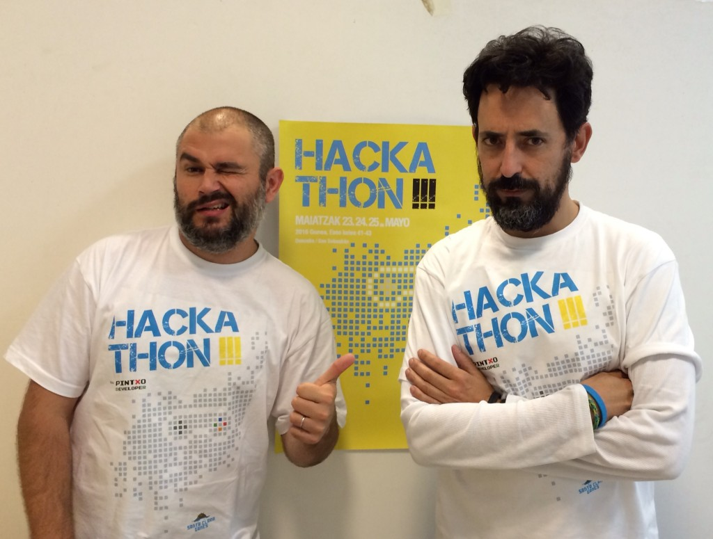
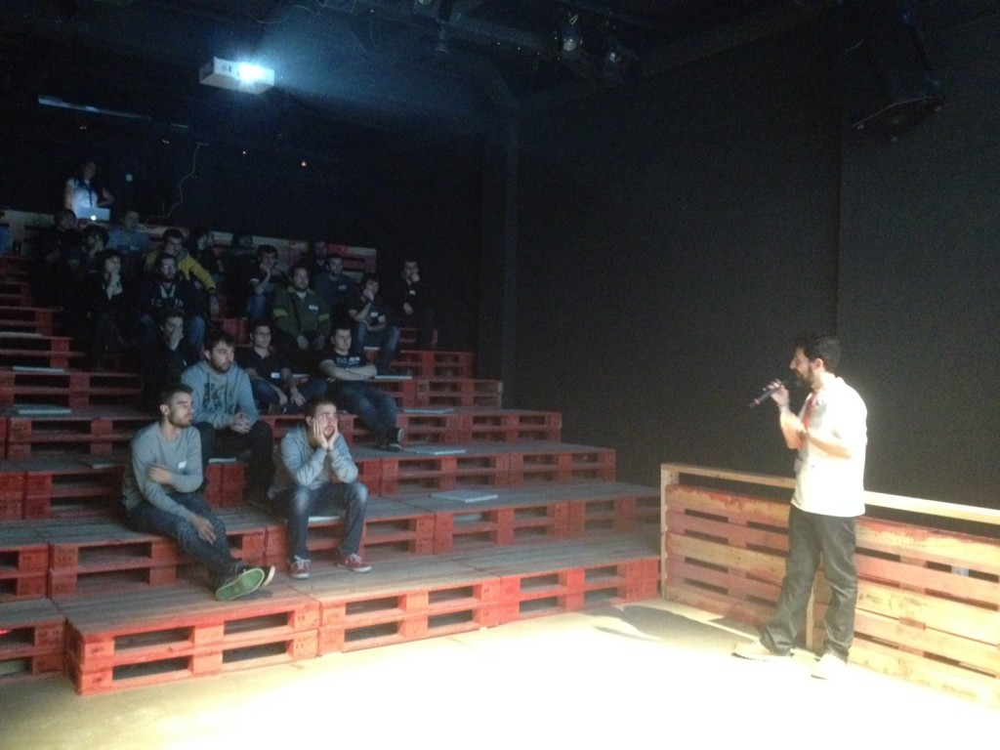
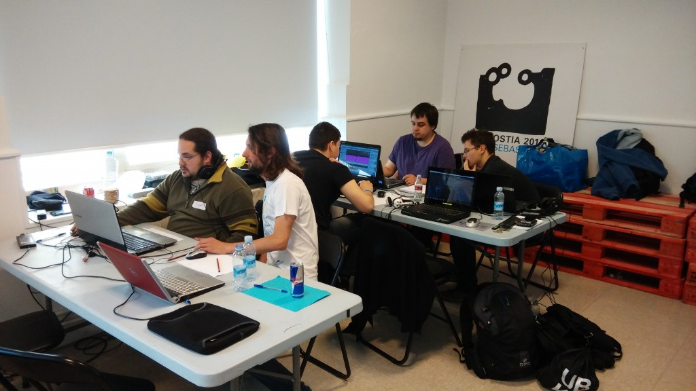
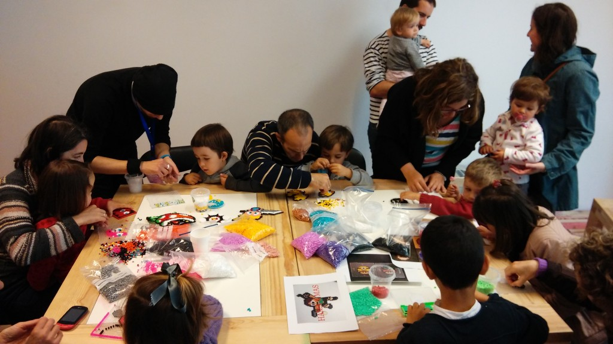
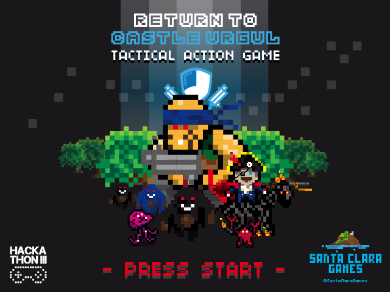
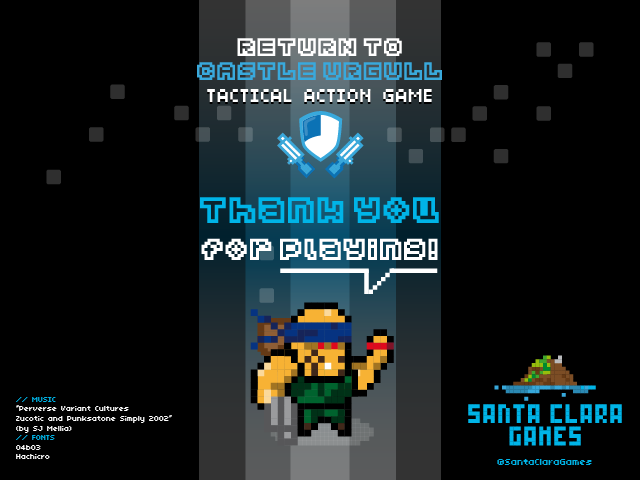

Olatutalka's Festival Hackathon!!!
 @ipuntom and @gravstar only had 4 hours of sleep... Pink elephants can tell!!
During the last weekend, Santa Clara Games with PintxoDeveloper Videogame Association co-hosted the "Hackathon!!!" gamejam event as part of the Olatutalka 2014 Festival in Donostia-San Sebastián (Basque Country).
The "Hackathon!!!" is an event in which participants, known as 'jammers', accept the challenge to develop a videogame around a common theme having just 48 hours. This year the theme was the Donostia-San Sebastián's Flag.
 @gravstar introducing the "Hackathon!!!" theme during his keynote
During the "Hackathon!!!" event several activities were performed in parallel. The main purpose was to spread the videogames culture around the city. On Saturday we screened "Indie Game: The Movie" documentary for free, and ran a Hama Beads Workshop on Sunday for the kids.
 Saturday morning, jammers at work. Crunch time came later...
The Hama Beads Workshop was mainly focused on kids. We teached them how to make their favourite videogames figurines characters. It was a huge success! Even parents liked to participate building their owns :)
 Kids (and parents!) during the Hama Beads Workshop. A lovely image <3
Santa Clara Games team managed to make a game too. We hit our limit of non-sleep-hours (44 for @ipuntom, 46 for @gravstar... nice record, but don't try it at home kids, it's not healthy) and managed to accomplish the challenge. The result was the videogame known as "RETURN TO CASTLE URGULL".

The feedback received from jammers and from who attended during the final day showcase, gives us strenght to polish, improve and finish the game so, STAY TUNNED FOR MORE!!
More news about R2CU are about to come ;)